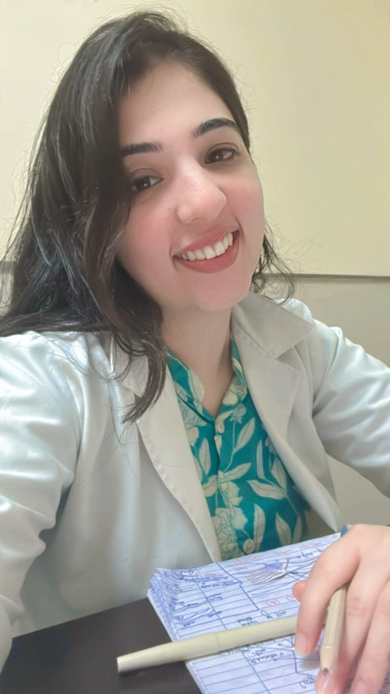
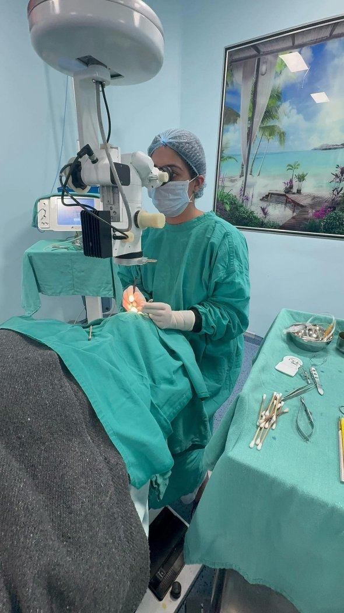
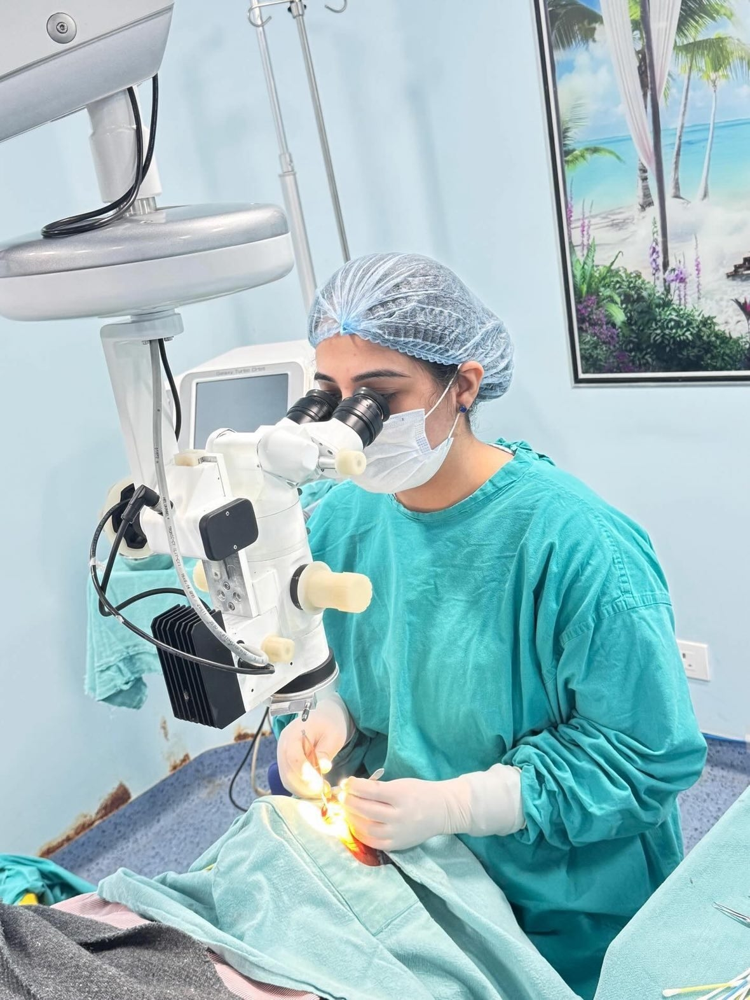
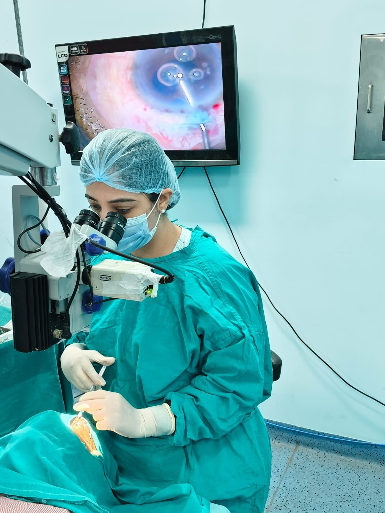

Clinical Identity
Public professional records identify Dr. Pirah Parmani as an MBBS, MSurg-listed ophthalmology doctor associated with LN Medical College and Research Center in Bhopal.
Ophthalmology | Bhopal, India
A focused medical professional in ophthalmology, combining clinical discipline, evidence-led thinking, and a calm patient-first presence.

Professional Snapshot
Public professional records identify Dr. Pirah Parmani as an MBBS, MSurg-listed ophthalmology doctor associated with LN Medical College and Research Center in Bhopal.
Areas of Strength
Structured clinical attention to vision, eye health, and evidence-based patient evaluation.
Research involvement includes macular edema associated with retinal vein occlusion.
Public research indexing also references cataract surgery anaesthesia comparison work.
Work & Dedication




Academic Footprint
International Journal of Pharmaceutical and Clinical Research, 2024
Listed co-author on a retrospective study assessing visual acuity and central macular thickness after ranibizumab treatment.
International Journal of Life Sciences Biotechnology and Pharma Research, 2023
Public journal indexing lists Dr. Pirah Parmani among authors for a prospective comparative study.
Professional Presence
Use these public professional profiles and research indexes to verify credentials, academic mentions, and social presence.